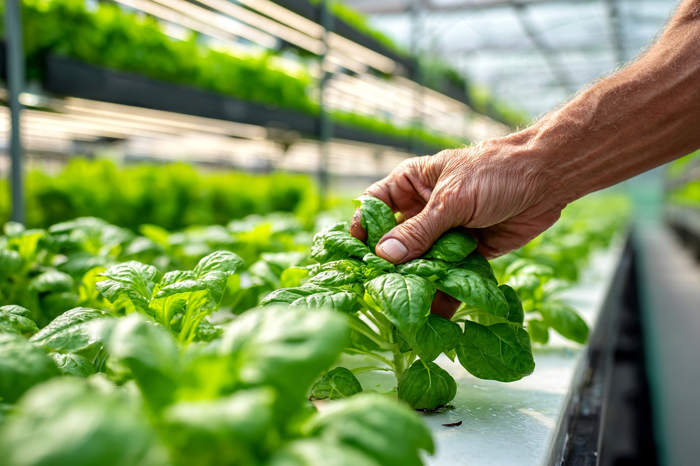
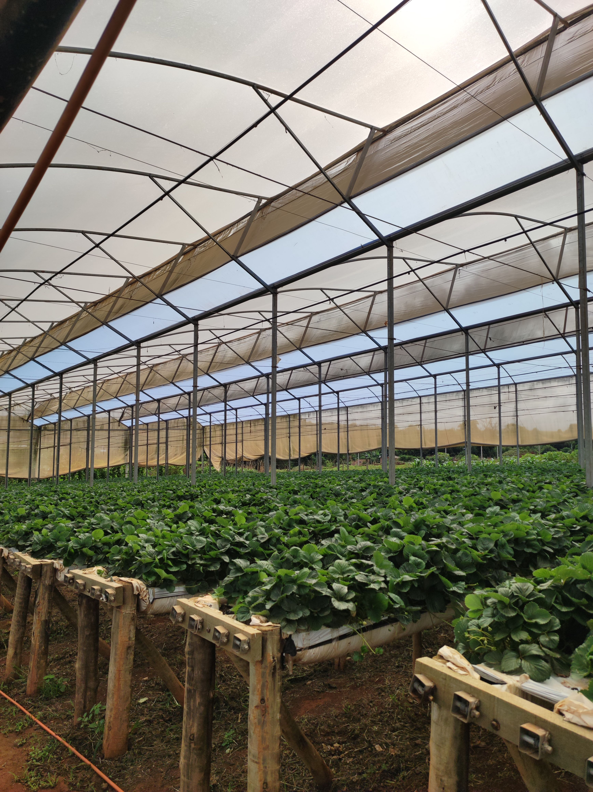
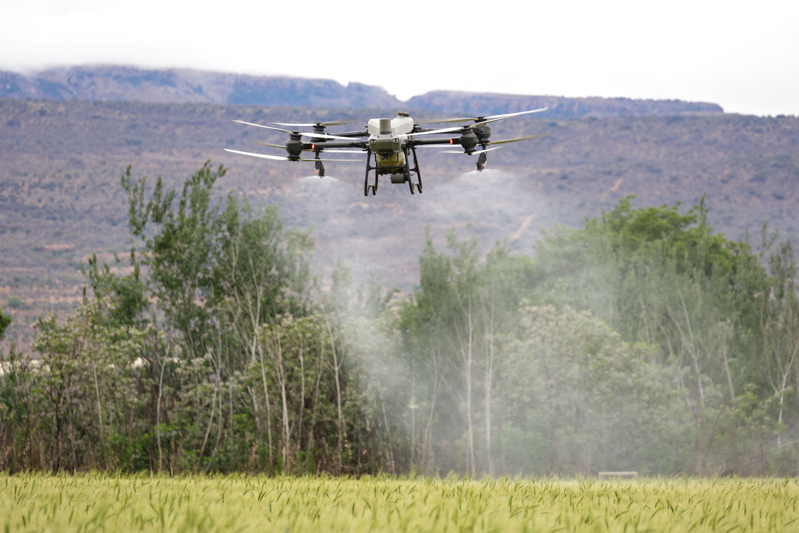

📸 Galeria




Equilíbrio entre produção e meio ambiente para garantir qualidade de vida às futuras gerações.
Conheça o ProjetoO agronegócio desempenha um papel fundamental na produção de alimentos, fibras e energia. Para que esse desenvolvimento continue acontecendo de forma responsável, é necessário investir em práticas sustentáveis que preservem os recursos naturais e promovam o equilíbrio entre crescimento econômico e conservação ambiental.
Auxiliam no monitoramento das lavouras, identificando problemas rapidamente e aumentando a eficiência da produção.
Permitem acompanhar a umidade do solo e utilizar a água de forma mais inteligente.
Reduz desperdícios e contribui para uma produção agrícola mais sustentável.
O uso racional da água é essencial para garantir recursos para as futuras gerações.
Técnicas sustentáveis ajudam a manter a fertilidade e evitar a degradação do solo.
A preservação da vegetação nativa protege a biodiversidade e os recursos hídricos.
O Paraná é referência nacional na produção agrícola. O investimento em inovação, cooperativismo e sustentabilidade contribui para fortalecer o agronegócio e preservar o meio ambiente.



O futuro sustentável depende das escolhas feitas hoje. Quando tecnologia, inovação e responsabilidade ambiental caminham juntas, é possível produzir mais, preservar a natureza e garantir qualidade de vida para as próximas gerações.